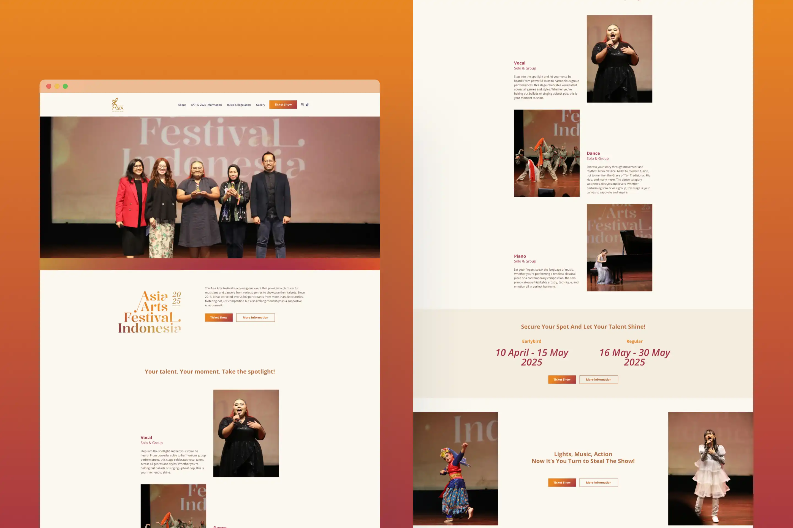

Asia Arts Festival Indonesia
Marketing Website for the Asia Arts Festival Indonesia 2025.
- Category
- Website and Content Management System
- Period
- 2025
- Role
- UX Designer & Project Manager
- Tools
The Asia Arts Festival is a prestigious event that provides a platform for musicians and dancers from various genres to showcase their talents. Since 2013, it has attracted over 2,600 participants from more than 20 countries, fostering not just competition but also lifelong friendships in a supportive environment.
Projects's Challenge
How might we structure and design the AAF Indonesia 2025 website for audience and participant so that important event information can be communicated clearly while guiding them toward understanding the festival and registering for the event
Project's Process
The website needed to serve as the main digital touchpoint for AAF Indonesia 2025, bringing together event information, competition details, rules, supporting activities, documentation, and registration within a coherent experience.
The project was organized into four major phases: Design, Development, Deployment, and Maintenance.
Results
The project resulted in the Asia Arts Festival Indonesia 2025 marketing website, accessible through asiaartsfestival.id. The resulting website brought together the festival's key public-facing information in one digital experience, including:
- Festival introduction and background.
- AAF Indonesia 2025 information.
- Competition categories and judges.
- Side events.
- Rules and regulations.
- Event documentation and gallery.
- Registration call to action.
- Supporting social media links.
Roles & Contribution
Team Structure
- Nurizka Fitrianingrum — UX Designer
- Imam Firmansyah — WordPress Developer
- Azie Dictiaz — UI Designer
Roles
UX Designer
Key Activities
- Project planning — Structured the website project across design, development, deployment, and maintenance phases.
- Content & requirement gathering — Organized the content and requirements needed to define the website scope.
- UX/UI design — Translated event content, value, and branding into website layouts, hierarchy, and interface components.
- Development coordination — Connected the design process with WordPress implementation.
- Deployment planning — Planned the staged website release across the soft launch, landing page launch, and remaining page deployment.
- Maintenance planning — Defined the post-launch maintenance scope and approach to content updates and bug fixing.
- Client/project coordination — Managed the project scope, timeline, revisions, and handover requirements.